Hachinohe
Hachinohe · Aomori
Hachinohe
Highlighted on the Aomori map.
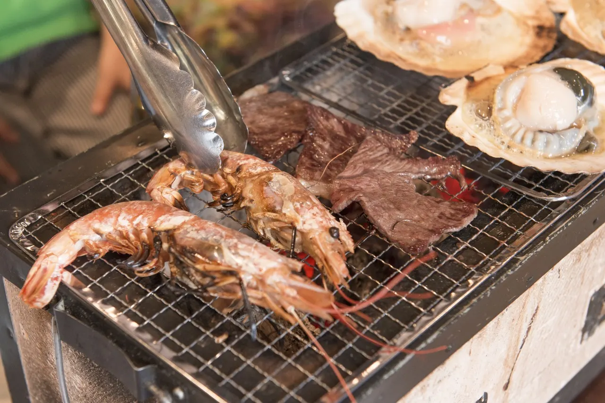
Stay
ダイワロイネットホテル八戸
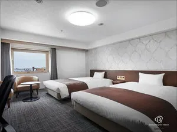
Daiwaroinettohoteru Hachinohe
ホテルルートイン本八戸駅前
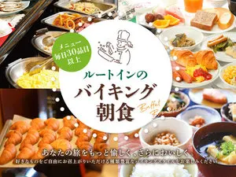
Hoteruruutoin Hon Hachinohe Ekimae
天然温泉 南部の湯 ドーミーイン本八戸
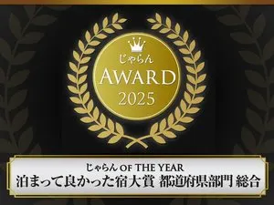
Tennen Onsen Nanbu No Yu Doomiiin Hon Hachinohe
シティパークホテル八戸
Shiteipaakuhoteru Hachinohe
ホテルイマルカ八戸
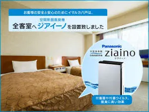
Hoteruimaruka Hachinohe
スマイルホテル八戸
Sumairuhoteru Hachinohe
ホテルグローバルビュー八戸
Hoteruguroobarubyuu Hachinohe
リッチモンドホテル八戸スクエア
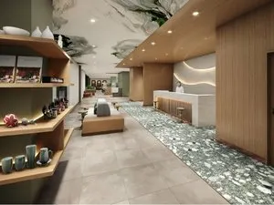
Ritchimondohoteru Hachinohe Sukuea
八戸グランドホテル
Hachinohe Gurandohoteru
ホテルイルヴィアーレ八戸アネックス
Hoteruiruviaare Hachinohe Anekkusu
ホテルリブマックス本八戸駅前
Hoteruribumakkusu Hon Hachinohe Ekimae
ホテルグローバルビュー八戸アネックス
Hoteruguroobarubyuu Hachinohe Anekkusu
Dining
炉端とおでん 呼炉凪来 本八戸店
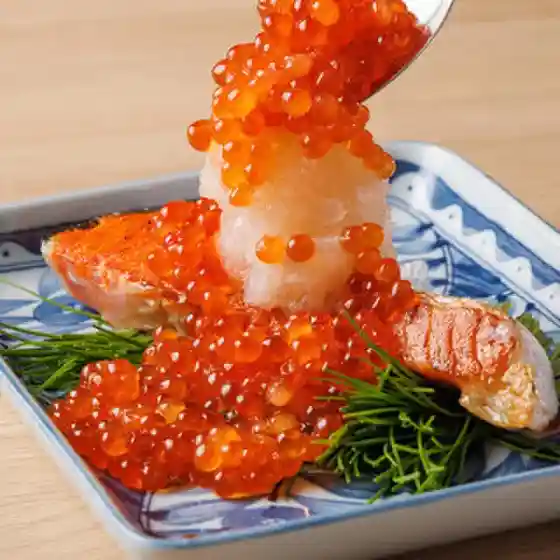
Robata Tooden Ko Ro Nagi Rai Hon Hachinohe Mise
トリノ王子サマ
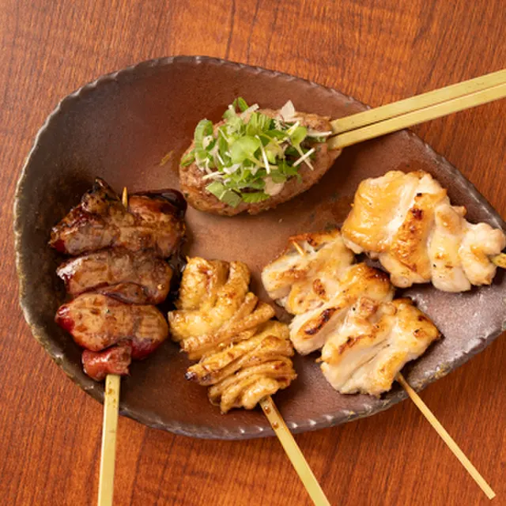
Torino Ouji Sama
居酒屋 魚と焼鳥 鶏ヤロー! 青森八戸店
Izakaya Sakana To Yakitori Niwatori Yaroo ! Aomori Hachinohe Mise
いろはにほへと 八戸八日町店

Irohanihoheto Hachinohe Youka Machi Mise
旨唐揚げと居酒メシ ミライザカ 八戸三日町店
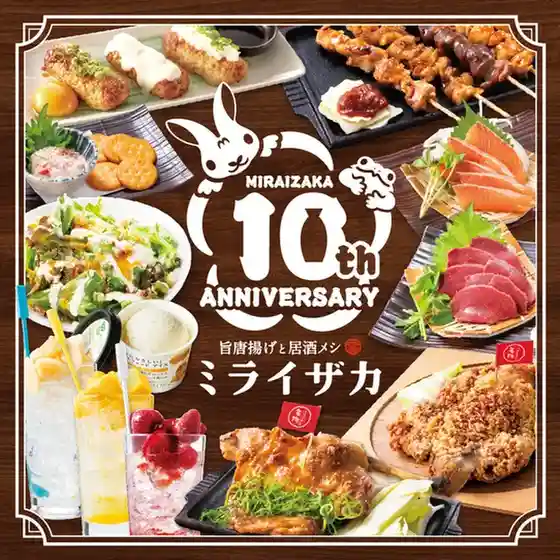
Mune Karaage To Kyo Sake Meshi Miraizaka Hachinohe Mikka Machi Mise
博多酒場 あいらしか 青森八戸店
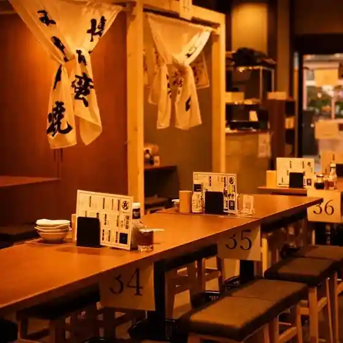
Hakata Sakaba Airashika Aomori Hachinohe Mise
いろり家 八戸三日町店
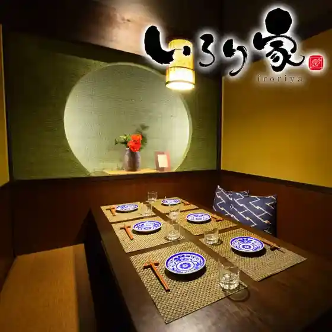
Irori Ie Hachinohe Mikka Machi Mise
炭火串焼と旬鮮料理の店 炉灯煋
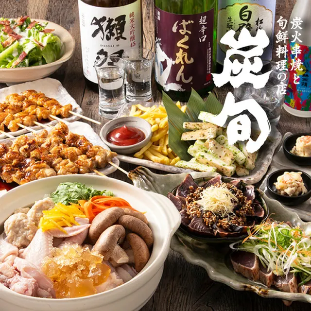
Sumibi Kushiyaki To Jun Sen Ryouri No Mise Ro Tomoshibi
しゃぶしゃぶ温野菜 八戸店
Shabushabu Onyasai Hachinohe Mise
すし処 神田
Sushi Tokoro Kanda
牛角 八戸ゆりの木通り店
Gyuukaku Hachinohe Yurino Akebi Ri Mise
イサバのかっちゃの店 肴町のらぷらざ亭
Isaba Nokatchano Mise Sakanachou Norapuraza Tei
旬肴鮨所 季楽
Jun Sakana Sushi Tokoro Ki Raku
亜都夢
A Miyako Yume
福福屋 八戸三日町店
Fukufuku Ya Hachinohe Mikka Machi Mise
いざかや サンキュー
Izakaya Sankyuu
魚民 八戸東口駅前店
Uotami Hachinohe Higashiguchi Ekimae Mise
居酒屋 呑斗
Izakaya Don To
三代目網元 魚鮮水産 八戸三日町店
Sandaime Amimoto Uosen Suisan Hachinohe Mikka Machi Mise
炭火焼きとり ごち
Sumibi Yaki Tori Gochi
キッチン&カフェ オーシャン
Kitchin & Kafe Ooshan
八戸酒場 ぎんが
Hachinohe Sakaba Ginga
SAKE つなぐ
Sake Tsunagu
あそびゴコロ居酒屋凪
Asobi Gokoro Izakaya Nagi
Sights
Hachinohe City Museum
City museum of Hachinohe history; closed for renovation from October 2025 to June 2027 (planned), with the shop still open.
Fukuichiman Kokuzo Bosatsu Hall
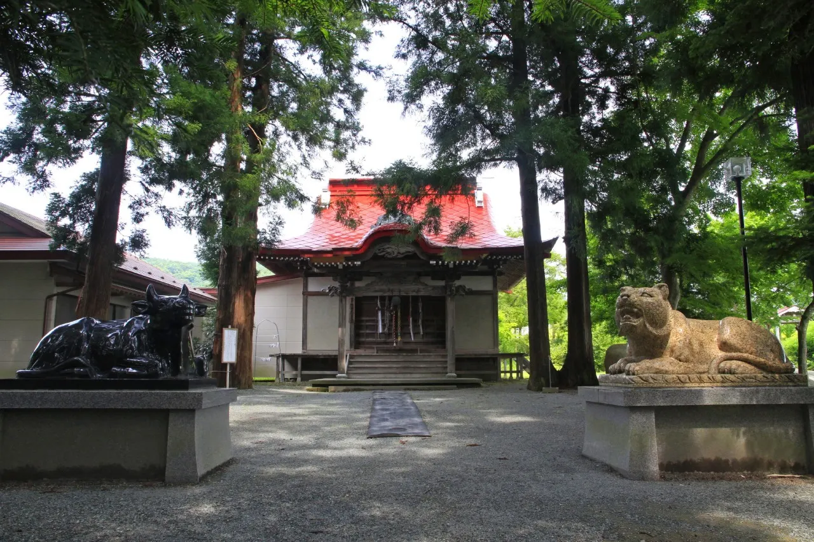
One of Japan's three great Kokuzo Bodhisattva halls, built as a prayer hall for the Hachinohe domain.